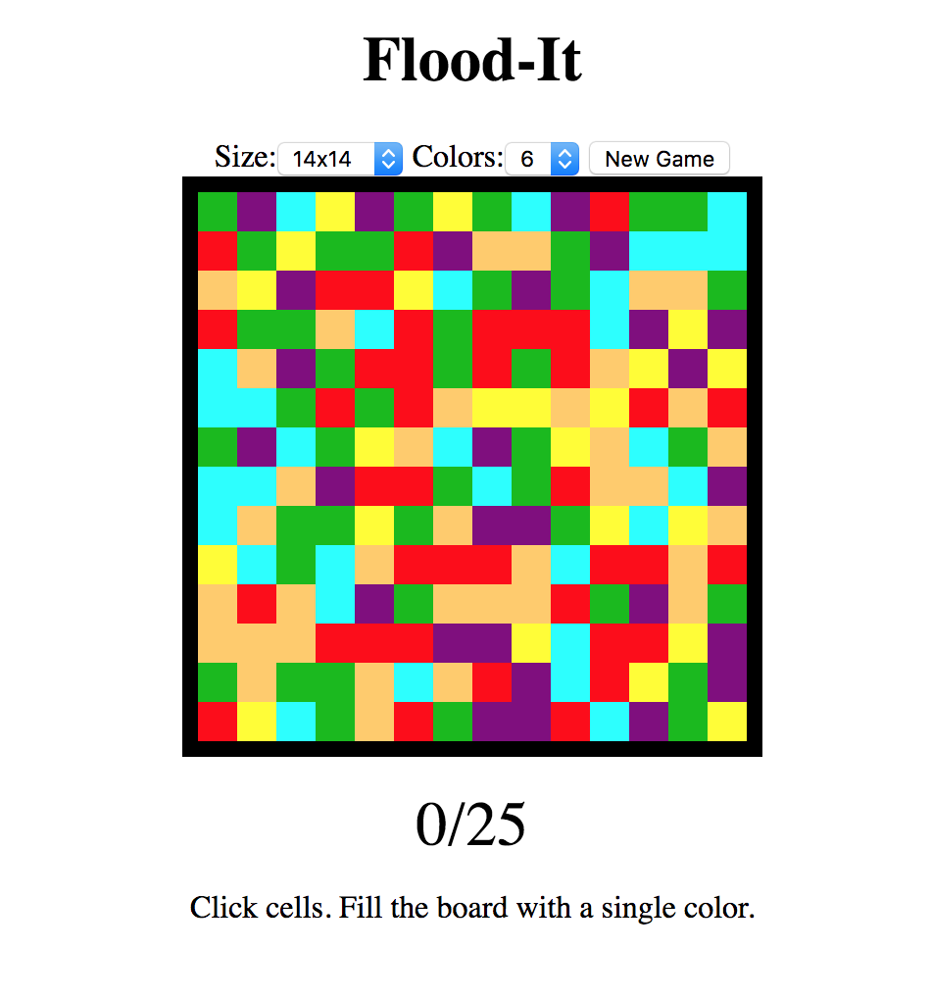
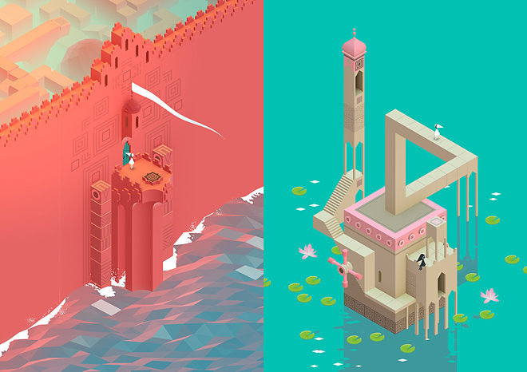

For this project, I want to create a game similar to Flood It.

The object of the game is to start with the square in the upper-left corner, and flood the entire board to any single color within a limited number of moves. On each turn the player chooses a new color to paint the top left tile and any tiles adjacent to it of that same color, all the way until the entire board is uniform.
I’m choosing to implement this kind of game for a couple of reasons. First, it seems feasible to implement. Each block is an object, and can keep track of the colors of its neighbors. Each block can also have an “inFlood” state, meaning that it’s a part of the growing flood, and should be checking for adjacent square to manipulate in the event that an adjacent square’s color is called. Second, I think that this game gives me room to make some visually interesting things happen. As a graphic artist, I love trying to make my games (and any kind of work) beautiful, so I wonder if there are fun animations that I can try to implement in this game. For example. I could try making the squares move in some way throughout the game, instead of having a set of static boxes on the screen. There is also room to make the “flood” animation look more exciting than simply having the boxes switch color.
One of my main goals for this project is to push myself to make the product look more interesting than the screenshot above. Some pieces of visual inspiration for me, both in terms of colors and animations, come from the game Monument Valley. The sea of triangles in the left image would be fun to translate to the square grid of Flood It, and the harmony of the colors in the right image is something I certainly aspire to.
